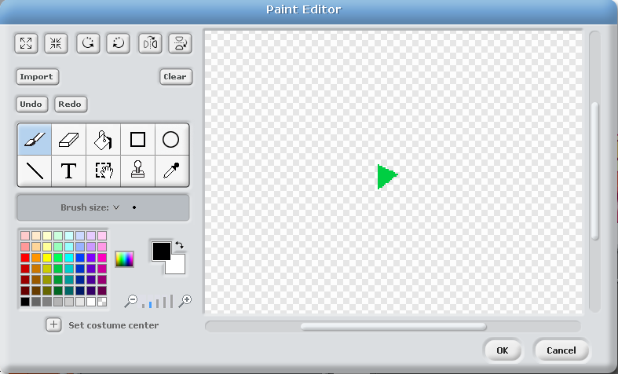

Activity Checklist
- Create two new lists (for all sprites). Call one of them
instrumentand the othertiming. - Create a new variable (for all sprites) called
recording For each of your instruments (drum, piano, each sound sample etc.), you will need to add the following items to the
when I receiveblock.if <(recording) = (1)> then add (timer) to [timing v] add (cat) to [instrument v]Change the word “cat” in
add [cat] to [instrument v]to match the name of the message used to play this sound.when I receive [drum v] play drum (48 v) for (0.2) beats if <(recording) = (1)> then add (timer) to [timing v] add (cat) to [instrument v] end set size to (110) % wait (0.1) secs set size to (100) %- Draw a new sprite and give it a red circle costume. Name this sprite “Record”.
Create a script that sets
recordingto 1 and deletes all ofinstrumentandtimingwhen clicked.
Test your project
Try clicking the record button. What happens when you play instruments?
- Create another sprite and give it a costume in the shape of a green arrow. Call this “Play”. 
- Create a new variable called
indexfor Play only. Now we need to make the playback actually do something. Add this script to “Play”
when Play clicked set [recording v] to (0) set [index v] to (1) reset timer forever if <(item (index) of [timing v]) < (timer)> then broadcast (item (index) of [instrument v]) change [index v] by (1) if <(index) > (length of [timing v])> then stop script end end end
Test your project
Press the green play button. what happens?
Now click the red record button and play some instruments. When you’re done, press the green play button again. What happens?
Play some more instruments without pressing record. Then play the green play button again. What happens?